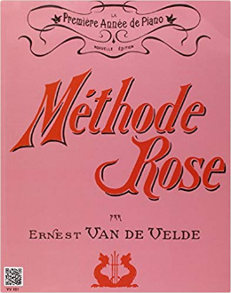
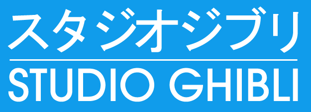
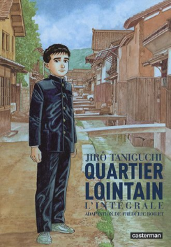
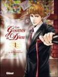

Kung-Fu
Plus qu'un loisir, une passion.
- Octobre 2017 - Août 2018 : Ma première année dans le cours adulte. Je découvre le cercle Thieulâm, école de Montivilliers, qui m'accueille en son sein et qui constitue pour moi une seconde famille. Il s'agit d'une école de Kung-Fu spécialisée dans le style Shaolin traditionnel, dirigée par maître Jean-Marie Levray (Sifu). Je passe ma ceinture blanche en janvier, et mon premier grade en juin. Afin de progresser encore dans ma pratique, je m'inscris au séminaire annuel auprès de maître Jean-Paul Cabrol (Sikung), premier disciple du grand maître fondateur du Thieulâm (Sijo) et maître des écoles Thieulâm en France. Ce séminaire intensif de Kung-Fu, Taï Ji Quan et Qi Gong d'une semaine fut l'une des plus belles expériences de ma vie.

Aller sur le site de l'école
- Septembre 2001 - Juin 2004 : Mes 3 premières années dans le cours enfant du club ACSEC de Kung-Fu Wu Shu, auprès de maître Li Qin (anciennement professeur à l'université de STAPS de Beijing). Passage du second grade, correspondant à la ceinture jaune.
Aller sur le site de l'école
Cours d'université
- J'aime suivre à mon rythme en auditeur libre (quand j'ai le temps) les cours en ligne de l'université de Genève sur la civilisation japonaise et chinoise, notamment ceux de Heinemann Robert Klaus, en prenant toujours soin de les retranscrire au propre, avec images et liens. C'est un vrai plaisir d'écouter, même en cours magistral, le discours savant de ce professeur érudit sur des sujets qu'il sait, par son art oratoire, rendre intéressants.
Accéder aux cours en ligne
Musique
- Fasciné par les mélodies au piano, notamment celles de Joe Hisaishi et de Yiruma, j'ai décidé de m'y mettre sur mon temps libre, en récupérant un petit piano digital Farfisa (apprentissage en autodidacte grâce à la méthode rose d'Ernest Van de Velde). Et parfois pour m'amuser, jaime suivre les tutos sur Youtube, afin de jouer façon Guitar Hero, même si je sais que cela fait prendre de mauvaises habitudes, mais de temps en temps, ça permet de retirer le côté frustrant de l'apprentissage.

Le commander
Cinéma d'animation et manga
- Passionné par le cinéma d'animation, notamment japonais, je pense que Ghibli est vraiment un studio à part. Il n'y a pas que la beauté des dessins, mais surtout l'intelligence émotionnelle qui s'en dégage. Les films sont riches d'interprétation, à plusieurs niveaux, et parlent aussi bien à l'enfant qu'à l'adulte ; voire à l'enfant qui sommeille en l'adulte. Sans parler des valeurs défendues au service d'une certaine vision du monde, notamment celle de Hayao Miyazaki ; parmi elles le féminisme et l'écologie, pour n'en citer que deux. Sans oublier la sensibilité et le réalisme de Isao Takahata, co-fondateur et autre grand maître. Ainsi je collectionne bien sûr leurs films, mais aussi les vinyles des bandes originales et les partitions au piano.

Devenir butadien
Mais parmi les grands maîtres de l'animation japonaise, il me faut également citer :
- Satoshi Kon
- Makoto Shinkai
- Keiichi Hara
- Hiromasa Yonebayashi (un des héritiers du Studio Ghibli)
- J'affectionne tout particulièrement les mangas dits littéraires, notamment ceux de Jirô Taniguchi, qui sont souvent des biopic ou des adaptations de romans (ce qui m'a d'ailleurs permis de découvrir l'excellente auteure Hiromi Kawakami). C'est toujours dessiné avec le sens du détail, et les histoires reflètent bien la vie réelle, toujours avec une certaine tendresse poétique.
- Mais il me faut aussi citer l'excellent manga que sont "Les gouttes de Dieu", qui m'ont passionné pour l'univers du vin. De ce fait, je m'intéresse à la conservation de ce patrimoine national, qui reflète un savoir-faire vieux de plusieurs siècles et encore inégalé par les autres pays du vin, mais qui est aujourd'hui menacé par le réchauffement climatique, l'utilisation des pesticides et les multinationales qui cherchent à racheter nos parcelles pour faire un vin sans âme, un vin industriel...


Les voyages
- J'adore voyager et découvrir de nouvelles cultures en immersion, à la façon "Rendez-vous en terre inconnue". Voici les pays que j'ai déjà visité :
- La Géorgie - Tbilissi, Mestia (1 mois)
- L'Allemagne - Berlin, Eberswalde (plusieurs semaines, à différentes reprises)
- La Crète - Road Trip (11 jours)
- L'Ukraine - Kiev, Zaporojié, Dnipopetrovsk, Kirillovka (10 jours)
- L'Écosse - Édimbourg, Glencoe, Fort William, Île de Skye (10 jours)
- La Pologne - Wrocław, Cracovie (1 semaine)
- L'Irlande - Dublin, Gallway, Connemara (1 semaine)
- L'Espagne - Les Baléares (1 semaine)
- La Tunisie - Hammamet, Tunis (1 semaine)
- Les Pays-Bas - Road Trip (1 semaine)
- L'Autriche - Vienne (5 jours)
- Turquie - Istanbul (5 jours)
- La République Tchèque - Prague (4 jours)
Autre
- L'intelligence artificielle
- Les documentaires scientifiques et l'astronomie
- La moto
- Le bouddhisme, le taoïsme et la méditation
- Les jeux vidéos (notamment le genre film interactif)